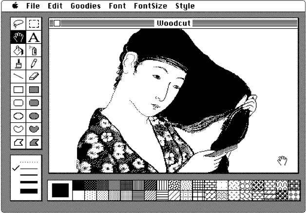
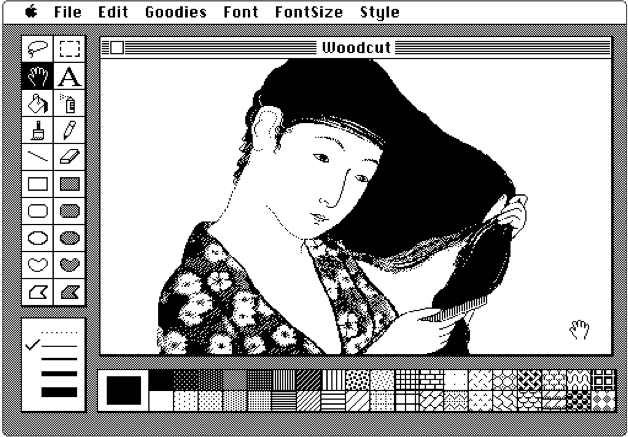

CHSA
CHSA
CHSA
CHSA
Mark Hellar Background
Conservation and Exhibtion

Since 2007 I've worked with the conservation department at SFMOMA specializing on the conservation and exhibition of digital media art. I'vs also worked on conservation and exhbition projects at MoMA, Solomon Guggenheim, Tate Modern and the Smithsonian Insitution

 

AR Work
 You Be My Ally(2020), Jenny Holzer and the University of Chicago
You Be My Ally(2020), Jenny Holzer and the University of Chicago
In October 2020, The University of Chicago launched a new public art commission by world-renowned artist Jenny Holzer, YOU BE MY ALLY, which premiered Oct. 5 on the UChicago campus through a web-based augmented reality app. The text-based artwork was Holzer’s first augmented reality (AR) project in the United States.
I executed the software development for the project, including the Augmented Reality experiences and user interface elements.


The Project featured seven onsite Augmented Reality experiences tied to architectural sites on the University of Chicago campus featuring texts from the core curriculum.
Video Documentation

Press
New York TimesDesignboom
UChicago Magazine
After the Holzer project I joined the Adobe Aero team